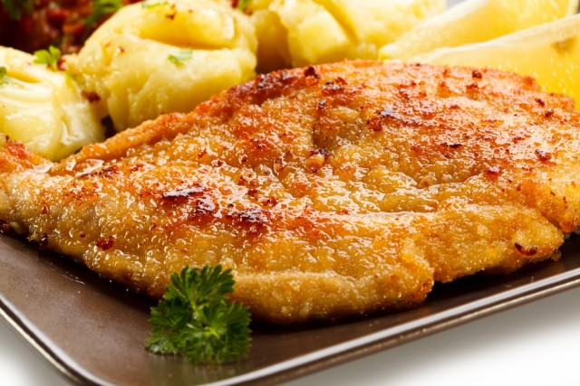

Argentine Milanesa

Description
On their own, with lemon, a la napolitana, stuffed, fried, baked, however
you like them. Every family has their own favorite cut and coating but
whatever the preference the milanesa is an ever-present on the Argentine
table (even in vegetarian versions or with different meats).
Argentinians have appropriated the concept of the milanesa. It's part of
the country's gastronomic and cultural heritage, charged with symbolism as
it represents the coming together of two of the country's historic
treasures: beef and wheat.
Ingredients
- 4 Servings
-
2 lbs (900g) beef round, thinly sliced (1 cm thick/ 1/2-inch thick)
- 2 eggs, beaten
- 2 cups (250g) breadcrumbs
- 2 garlic cloves, chopped
- 3 tbsp parsley, chopped
- salt
- black pepper, ground
- vegetable oil (for frying)
Steps
- Slice the beef into 1 cm (1/2-inch) thick cutlets.
-
Cut off all the fat and the sinew to get as clean of as cutlets as
possible.
-
Tenderize the cutlets with a mallet until half a centimeter (1/5-inch)
thick.
-
Whisk the eggs with chopped garlic, chopped parsley, salt, and pepper.
-
Drench the cutlets in the egg mixture, then let them soak in it in the
refrigerator for 45 minutes.
- Heat the oil over medium-high heat until it reaches 170°C/340°F.
-
Coat the cutlets in breadcrumbs and fry them on both sides for a few
minutes, then place them on paper towels to drain.
-
Serve warm, with some of the following: French fries, mashed potatoes,
green salad, potato salad, or roasted peppers.
go to recipes